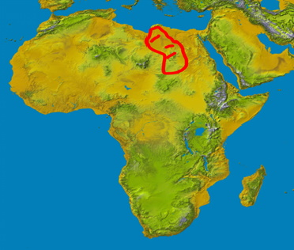
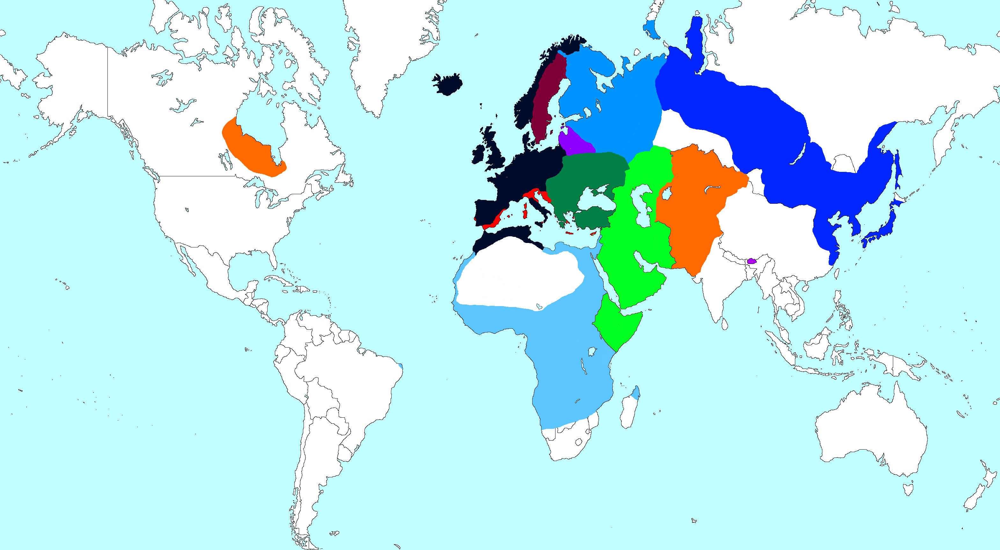
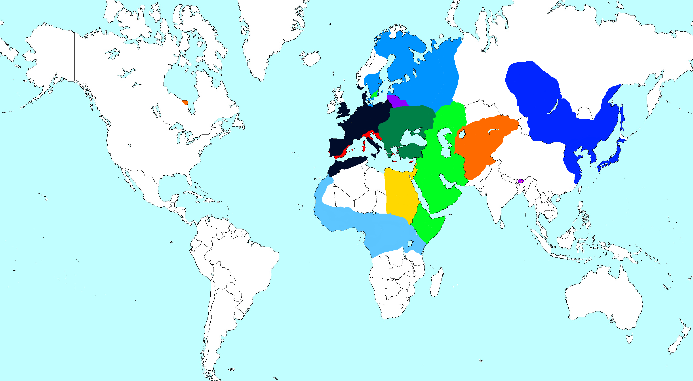
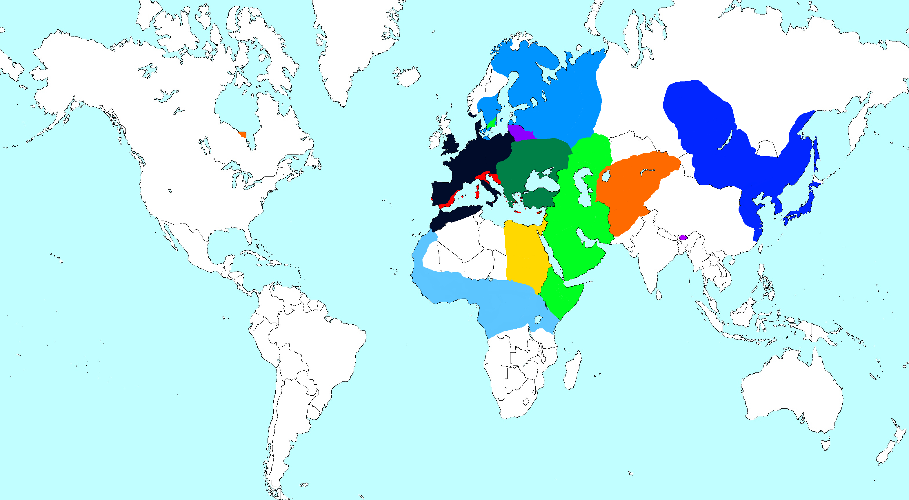

Первое ВПИ "Зарождение"
 Это было первое ВПИ которые провели на нашем сервере. Тут были сформированы "догмы" нашего пути в этой сфере. Сформировал их - Маэстро Чара.
Глава нашего Сервера. Суть следующая - Отыгрыш наше все. Конечно такая слегка наивная позиция на первых порах привела к многоми забавным ситуациям но все же.
Этот принцип лег в наш сервер прочно. (ВПИ Zaka не в счет он Канкуляторщик :P) .
Сам же первый куратор - Маэстро Чара уже имел опыт в проведении ВПИ, у него был до того свой сервер. Там была крутая карта, и механики...
Но к сожалению нечего более об сервере не известно, он был утерян. Далее поговорим об самом ВПИ, что происходило в мире . Узнаем его историю.
0 Год, Технологии около Средневековье .За все время сыграло около ~13 человек.
Это было первое ВПИ которые провели на нашем сервере. Тут были сформированы "догмы" нашего пути в этой сфере. Сформировал их - Маэстро Чара.
Глава нашего Сервера. Суть следующая - Отыгрыш наше все. Конечно такая слегка наивная позиция на первых порах привела к многоми забавным ситуациям но все же.
Этот принцип лег в наш сервер прочно. (ВПИ Zaka не в счет он Канкуляторщик :P) .
Сам же первый куратор - Маэстро Чара уже имел опыт в проведении ВПИ, у него был до того свой сервер. Там была крутая карта, и механики...
Но к сожалению нечего более об сервере не известно, он был утерян. Далее поговорим об самом ВПИ, что происходило в мире . Узнаем его историю.
0 Год, Технологии около Средневековье .За все время сыграло около ~13 человек.
Это было первое ВПИ которые провели на нашем сервере. Тут были сформированы "догмы" нашего пути в этой сфере. Сформировал их - Маэстро Чара.
Глава нашего Сервера. Суть следующая - Отыгрыш наше все. Конечно такая слегка наивная позиция на первых порах привела к многоми забавным ситуациям но все же.
Этот принцип лег в наш сервер прочно. (ВПИ Zaka не в счет он Канкуляторщик :P) .
Сам же первый куратор - Маэстро Чара уже имел опыт в проведении ВПИ, у него был до того свой сервер. Там была крутая карта, и механики...
Но к сожалению нечего более об сервере не известно, он был утерян. Далее поговорим об самом ВПИ, что происходило в мире . Узнаем его историю.
0 Год, Технологии около Средневековье .За все время сыграло около ~13 человек. Первые пару лет игры прошли спокойно. Сформировались первые союзы : военные, экономические. Тогда , кстати, зародилась одна интересная традиция. Которая, была забыта спустя несколько ВПИ. Заключалась она в следующем . Игроки когда вступали в один союз ставили себе теги, теги своего альянса. Например [KS] - Коноха , Контри. Это и был первый Альянс. Игрок на Крыме, и Дагестане заключили союз о сотрудничестве, и дружбе.
Они активно торговали и искали себе еще союзников (Хотя Механики как таковой и не было). Игроки на Севере решили заняться рыбалкой, но в скором времени игрок - Loys выбыл. Его страну попала зараза и игра для него было окончена.
Время шло, появились более крупные объединения игроков , мир начал разделяться на лагеря. В Частности на - Европейский и Африканский.
Анархичная Республика, была сильной страной и занимала лидирующие место в мире по экономике. Но Африка на которой сидел - Kiratinka, изменил ход игры. Он ворвался и сходу стал ровней Анархии, напряжение нарастало. Несмотря на это большая часть мира (Включая Анархию и Киратинку) вступили в единый экономический союз.(Страны Азии пока что не особо влияли на игру) Все было спокойно до первого кризиса..
Стояние в Африке.
Терепение Анархичной Республики было на пределе, им закрывали доступ в Африку где по планам Анархии должны были быть их земли.
Анархия подводит войска к границе , Киратинка делает то-же самое. И тут было начнется война!... Но нет, в дело вмешались союзники Африки и Анархии. За столом переговор кое- как удалось решить спорные вопросы. Мир вновь начала спокойно развиваться, высадка в новый свет, колонии в Индии, Исландии ... Хочется так-же отметить что были игроки и на острове Святой Елены и его Друг... Но история не помнит где он был...
Азиатский Конфликт.
Мир не мог длиться вечно, и война пришла откуда не ждали. - Азия, Два Государства Кыргызов и Кореи организовали союз (Так-же там был Бутан но это страна на которой сидел Куратор он не в счет) . Спором стало расширение Финляндии за Урал . Дело в том что был договор о котором земли до Урала за Финами, а дальше - Корея. Но договор был нарушен. Между Европой и Азией сверкнула искра. Искра войны, которой так и не было суждено случиться.
Европа была как на иголках, в короткий срок были собраны армии Конохии, КонтриСтана, Финляндии, и..
Литва - это маленькая страна отозвалась одной из первых . Желая помочь своему союзнику - Финляндии . И вот, мир вот вот полыхнет.
Союз Европы объявляет войну Кореи , войска идут к Границами, Силы стягиваются и... Конец! Почему? Сейчас расскажем.
В Заключение
ВПИ было самым первым, и имело очень много минусов, которые , перекрывались приятной, ламповой атмосферой.
В то время, игроки наших ВПИ сидели в Звонке, все вопросы и ход игры решался на месте. Так могло проходить несколько часов игры.
Скорее всего это было связано с тем что все друг друга знали, поэтому все спокойно друг с другом общались.
О механиках - Их не было вообще, все формировалось стихийно. И держалось на "здравом смысле ВПИ" вообщем-то по этой-же причине и закончилось первой ВПИ.
Игроки просто не смогли сойтись во мнении о механики войны. Один предлагали битвы в шахматах, другие в шашках . Куратор и игроки не пришили к общему мнению, и ВПИ закрылось.
Все что сохранилось с сервера это карты и небольшой кусок РП-текста. (Которые, в то время были по своему прекрасны просты и немного наивны.)
Посмотреть видео ролик по этому ВПИ вы можете тут - Переход к Видео
Далее будет отрывок РП текста.
 "Лесной проект Сахары"
Направлен на предотвращение подобных засухе условий, вызванных влиянием пустыни Сахара.
Это не только спасет жизни и подстегнет экономику страны, но и поможет бороться с последствиями климата регионе.
22 июня 47 года проект «Лесной проект Сахары» (Африканский Федирациия) подписал соглашение с посольством Королевства Конохии о создании стартовой станции проекта «Лес Сахары» . Стартовая станция станет первым шагом к созданию полномасштабного Центра лесных проектов Сахары.
Стартовая станция будет включать в себя теплицу с соленой водой и средствами для выращивания на открытом воздухе и восстановления растительного покрова.
Завод в Израиле был демонтирован в 43 году, и ожидается, что он будет введен в эксплуатацию в внутреней территории Египта. в 49 году после отгрузки.
Лесной проект Сахары напрямую Финонсируется бюджетов Конохии , в размере 200.000$ в год. И Африканской Федерацией в размере 400.000 $
и некоторыми союзными странами из KPS размере около 100.000$
ᅠ
Тут можете посмотреть на Карты

 
